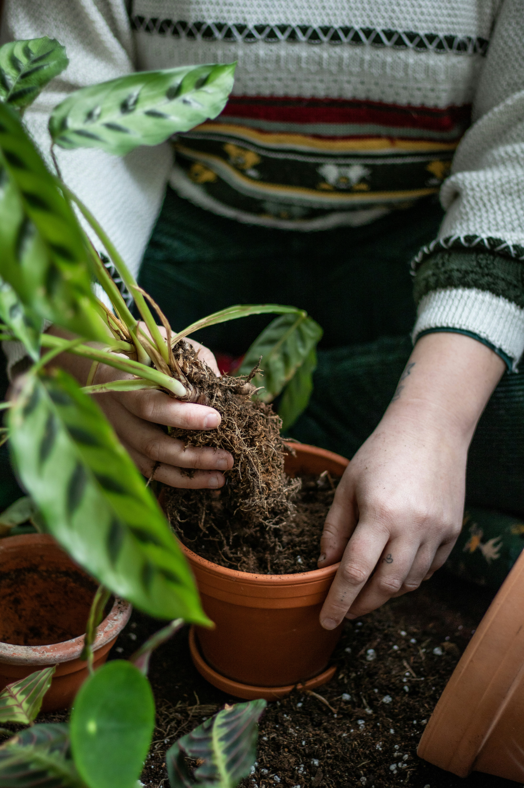

Roots are escaping
Roots growing through drainage holes or circling tightly inside the container may mean your plant needs more room. A few visible roots alone aren't always a reason to repot.
ROOT & ROOM • PLANT CARE BASICS
Repotting doesn't have to be intimidating. Learn when your houseplant needs a new home, how to choose the right container, and the simple steps that help it settle in.
Learn when to repot →
KNOW THE SIGNS
Houseplants don't need repotting on a strict schedule. Instead, look for changes in their roots, soil, and growth. These little clues can tell you when it's time for a fresh start.
Roots growing through drainage holes or circling tightly inside the container may mean your plant needs more room. A few visible roots alone aren't always a reason to repot.
If your plant needs water much more frequently than before, roots may be taking up most of the space that once held potting mix.
A plant that stops growing during its usual growing season might be root-bound. First, rule out insufficient light, temperature changes, and other care issues.
Old mix can become compacted, drain poorly, or stop absorbing water evenly. Refreshing the potting mix may help, even if the plant doesn't need a larger pot.
A little reminder: Not every plant wants a bigger pot. Some prefer snug roots, and many can benefit from fresh potting mix without moving into a larger container.
BEFORE YOU BEGIN
Repotting doesn't require a collection of fancy tools. A few thoughtful essentials will help you give your plant a comfortable new home.
Choose a container with drainage holes. If your plant needs more room, a pot roughly 1–2 inches wider than its current one is a good starting point for many houseplants. Avoid going unnecessarily large.
Explore our Pots & Planters Guide →Use a mix appropriate for your plant. Tropical foliage plants, succulents, and orchids often need different combinations of moisture retention and drainage.
Lay down newspaper, a reusable mat, or a tray to catch loose soil. Have a small scoop and clean scissors nearby in case you need them.
Have water available for when your plant needs it. Handle roots gently and take your time—repotting should be a careful process, not a race.
THE STEP-BY-STEP GUIDE
Ready to get your hands a little dirty? Follow these six simple steps to move your houseplant into its new home.
Make sure your container is clean and has drainage holes. Add a little fresh potting mix to the bottom so the plant can sit at approximately the same depth as before. Avoid adding a layer of rocks or gravel for drainage.
Tip the current pot sideways and support the plant near its base. Gently squeeze flexible containers or tap the sides to loosen the root ball. Avoid pulling forcefully on the stems.
Check for tightly circling roots and gently loosen the outer roots if needed. Trim only roots that are clearly dead, mushy, or damaged using clean scissors. Healthy roots generally don't need aggressive pruning.
Center your plant in its new container. Add fresh potting mix around the sides, keeping the original soil line at approximately the same height. Don't bury the stem deeper than before unless your plant specifically benefits from that treatment.
Add enough mix to support the plant without packing it tightly. Leave a little space below the rim so watering is easier and the soil doesn't spill over.
For most common tropical houseplants, water thoroughly after repotting and allow excess water to drain. Adjust for plants such as cacti or succulents, especially if roots were damaged. Return your plant to suitable light and give it time to adjust.
AFTER THE REPOT
A new pot is a fresh start, but your plant may need a little time to adjust. Gentle, consistent care is usually better than making lots of changes at once.
Return your plant to a spot with suitable light. Avoid suddenly exposing it to stronger direct sunlight while it's adjusting.
Fresh potting mix and a larger container can change how quickly soil dries. Check moisture before watering rather than following your old schedule.
Avoid fertilizing immediately if roots were disturbed or damaged. Many fresh potting mixes already contain nutrients, so check the label before feeding.
Mild temporary drooping can happen after repotting. However, persistent wilting, worsening yellow leaves, or soft stems deserve a closer look.
GOOD TO KNOW
Still have questions? Here are some of the most common things plant parents wonder about repotting.
Many houseplants benefit from repotting or refreshing their potting mix every one to three years, but growth rate, species, and root development matter more than the calendar. Check the roots and condition of the soil before deciding.
Spring and early summer are often ideal because many houseplants are actively growing. However, you can repot at other times when necessary, especially if there's a serious drainage or root health problem.
For most common tropical houseplants, watering after repotting helps settle the fresh mix around the roots. Allow excess water to drain completely. Cacti, succulents, and plants with damaged roots may need a different approach, so consider their specific care requirements.
Absolutely! If your plant doesn't need additional room, you can often reuse the same container with fresh potting mix. Clean the pot before reusing it, especially if the previous plant had a disease or pest problem.
Some temporary drooping can happen when roots are disturbed. Keep the plant in appropriate light and monitor soil moisture. If wilting becomes worse or continues, check for root damage, overwatering, or other care issues.
Usually not. For routine repotting, it's fine to leave some healthy potting mix around the roots. Removing every bit of old soil can unnecessarily damage delicate roots. More thorough removal may be needed if the mix is badly degraded or there's a root health problem.